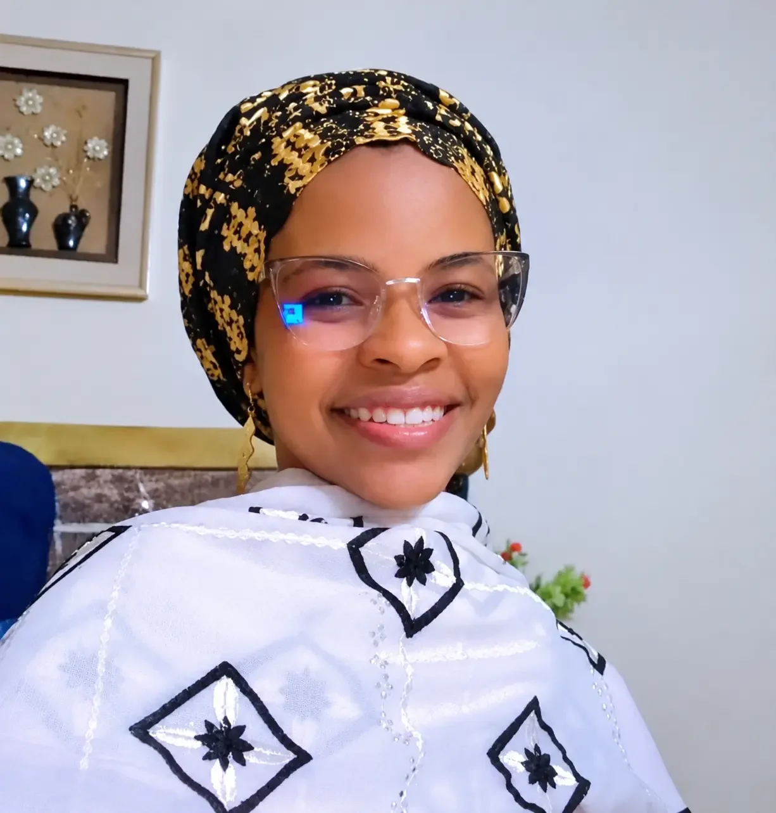
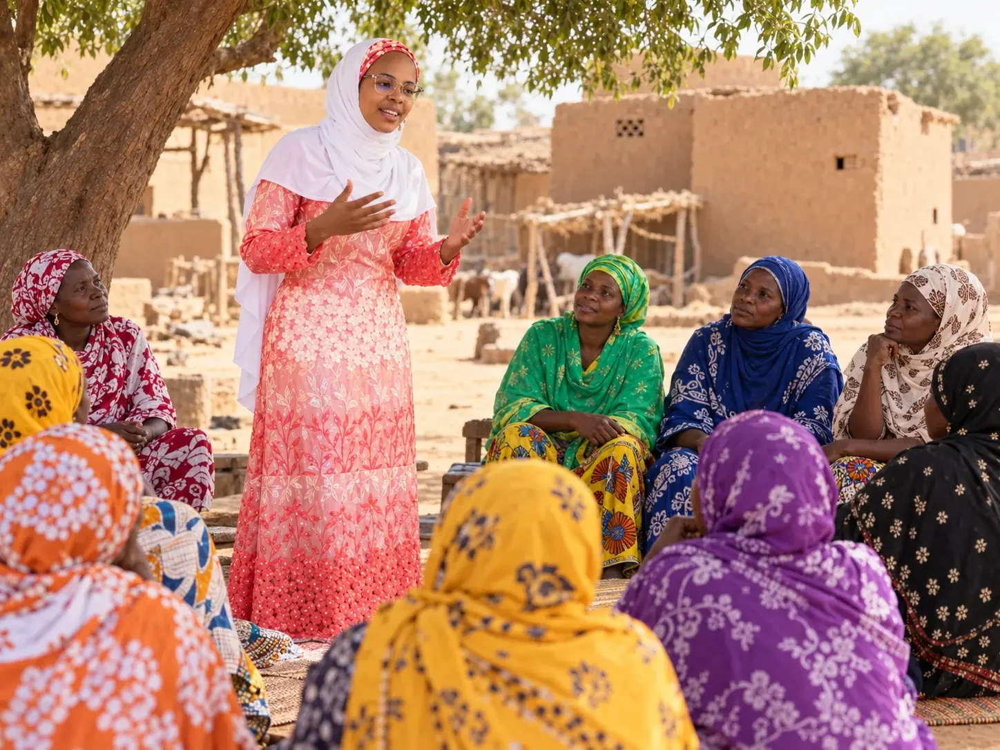
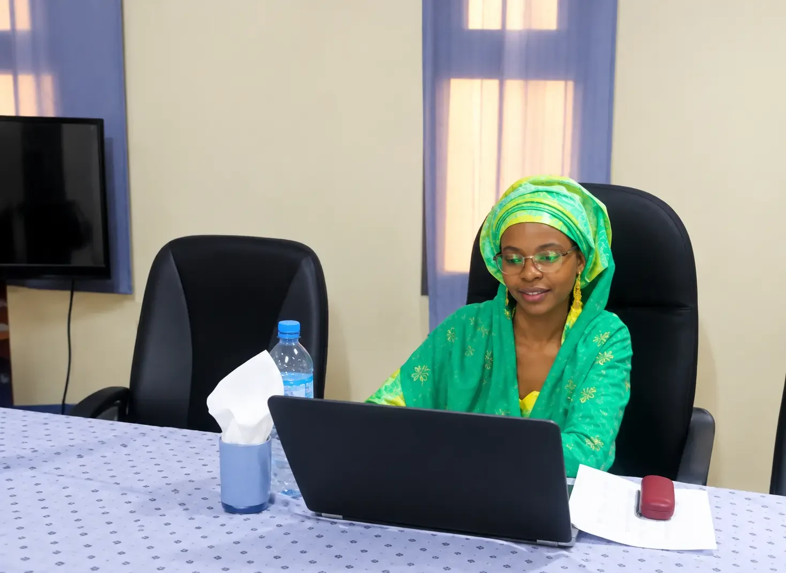

Protection sociale
Suivi des interventions, des transferts monétaires et des actions destinées aux populations vulnérables.
Programmes & accompagnement↗
Faire le lien entre les communautés, les partenaires et les programmes de protection sociale. Une expérience ancrée dans l’écoute, la mobilisation et le suivi des interventions au plus près des populations.
Agadez, Niger · Mobilité nationale et internationale

L’efficacité d’un programme social se construit d’abord sur le terrain : dans le dialogue, la confiance et la compréhension des réalités locales.
Forte d’un parcours dans la protection sociale et l’action communautaire, j’interviens auprès des communautés, des groupements féminins et des relais locaux. Je conjugue supervision, mobilisation, suivi des activités et remontée d’informations pour contribuer à une mise en œuvre rigoureuse des interventions.
Voir les expériences en détail↗Comprendre les besoins et donner une place centrale à la parole des communautés.
Créer les conditions du dialogue, de la participation et de la coopération locale.
Documenter les activités, accompagner les intervenants et transmettre les informations utiles.

Au village, une assemblée est bien plus qu’une réunion : c’est un espace d’écoute, d’expression et de mobilisation autour des préoccupations quotidiennes.
Scène d’illustrationUne expérience organisée autour de quatre domaines complémentaires, dans des programmes sociaux et communautaires.
Suivi des interventions, des transferts monétaires et des actions destinées aux populations vulnérables.
Assemblées villageoises, sensibilisation, mobilisation des femmes et formation de relais communautaires.
Supervision des activités des partenaires, suivi des équipes locales et circulation des informations.
Collecte numérique et remontée d’informations pour documenter la mise en œuvre des activités.
Informer, rassurer, écouter, échanger, recueillir des informations : autant de moments qui donnent un sens concret au travail de terrain.
Des responsabilités progressives, du recensement et de l’appui aux ménages à la supervision de programmes sociaux.
Projet Filets Sociaux Adaptatifs II « Wadata Talaka » · Agadez
Supervision des interventions des ONG partenaires, suivi des transferts monétaires réalisés par les IMF, accompagnement des groupements féminins et collecte de données via GEMS et KoboToolbox.
Projet ISCV « Tatalin Rayuwa » · Maradi
Organisation d’assemblées villageoises, supervision des relais communautaires et appui à la circulation des informations entre les équipes et les communautés.
ONG AGIR · Maradi
Recrutement et formation des relais communautaires, animation d’assemblées villageoises, sensibilisation sur les pratiques familiales essentielles et suivi des fiches ménages.
Projet CARE · Konni
Identification et ciblage des ménages vulnérables, appui à l’organisation de distributions de vivres, régulation des conflits et rapportage.
Institut national de la statistique (INS) · Niger
Répartition des zones de dénombrement, redéploiement des équipes et contrôle des fiches de recensement.

Le terrain se prolonge dans la préparation, le suivi et le partage d’informations. Coordination, organisation et outils numériques accompagnent le travail réalisé auprès des communautés.
Une combinaison d’expérience pratique, de formation universitaire, de sensibilisation sociale et de maîtrise d’outils de collecte.
Université Abdou Moumouni · Niamey
Lycée Bombey · Niamey
ANJE · DPE · gestion des plaintes
Ciblage des ménages vulnérables · Cash for Work
Projet Filets Sociaux Adaptatifs II
Français · Haoussa · Kanouri · Tamashek · Zarma · Anglais (notions de base)
Basée à Agadez, ouverte aux opportunités et aux déplacements selon les besoins des programmes. Pour toute collaboration, prise de contact ou demande de CV, les coordonnées sont accessibles ci-dessous.